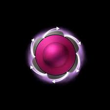
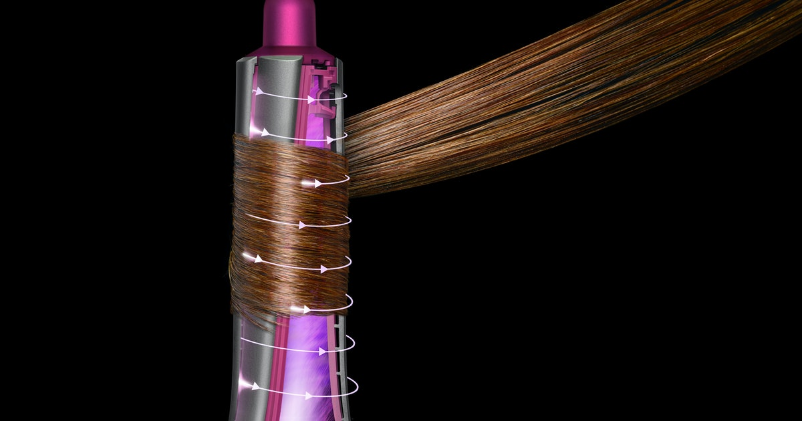

Dyson Airwarp Styler
What it is
Dyson Airwrap Complete styler is engineered for multiple hair types and styles. Featuring Coanda air styling and propelled by the Dyson digital motor, users can curl, wave, smooth and dry with no extreme heat.
The most awarded hair styling tool in 2019*, including the Allure Best of Beauty Breakthrough award.
What it does
Attracts and wraps hair, using only air – The Coanda effect attracts hair to the barrel, then wraps it for you, using only air.
Styles and dries simultaneously – Engineered to style damp hair. Combines powerful airflow with controlled heat, to dry your hair as it styles.
2 inch Airwrap™ barrels – Engineered to create voluminous curls or waves.
6 inch Airwrap™ barrels – Engineered to create loose curls or waves.
Firm smoothing brush – Engineered to smooth and control frizz-prone hair.
Pre-styling dryer – Takes hair from wet to damp, to prep for styling.
Features and Benefits

Coanda to curl – The Dyson Airwrap™ styler harnesses the Coanda effect to wrap hair against the barrel. No clamping mechanisms or gloves, just voluminous curls and waves.
Coanda to smooth – The smoothing brushes mimic a stylists’ blow-dry by attracting hair to their surface and propelling air along the stands.
No extreme heat damage – Intelligent heat control measures air temperature over 40 times a second to prevent extreme heat damage while styling.
One-click attachments + cool-touch tips – A quick-release switch and cool-touch tip allow you to quickly change attachments while styling.
Symmetry barrels – Clockwise and anti-clockwise barrels for symmetrical curls.
Negative ions – Help reduce static in the hair.
Cool shot – To set your style.
Easy clean filter – Magnetic, removable and washable, with filter cleaning brush.
Swivel cable – for ease of movement, at any angle.
Storage case – Protects and neatly stores your Dyson Airwrap™ styler and its attachments.
2-year warranty – On parts and labor.
6 Steps to Curl Retention:

1. Start with damp, towel-dried hair.
2. Use the 1.2 inch barrel for a defined curl.
3. Use high heat and airflow
4. Make sure curl is completely dry before you turn the machine off.
5. End with cool shot to set style.
6. Add styling product such as hairspray to maximize curl longevity.
Additional Airwrap stylers available for specific hair types and styles.Search Dyson on Amazon.com to explore the range of Airwrap stylers.